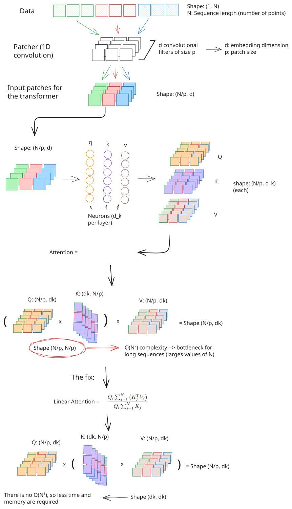

Method
We trained FluidFlow with 2 different CFD datasets, airfoil Cp distribution and aircraft Cp and Cf distributions. The airfoil case is simpler, since it can be considered as 1D structured data. Here, we tested two neural network architectures: U-Net and DiT. Both models perform similarly and can work with this kind of data without significant modification.
However, some problems arise when we switch to 3D. Here, the data comes from unstructured meshes and spatial information is more difficult to capture. This makes the U-Net unsuitable for this task, since it relies on convolutional layers. To address this issue, we treated the data as a sequence of points. With this approach, the DiT could be used with only minor modifications to the patching block to accommodate this sequential data. However, the DiT presents its own problems since it relies on the attention mechanism, which scales quadratically with the number of points. The computational resources required are too high for this type of data, given that each aircraft has more than 260,000 points.
We propose replacing self-attention with linear attention, a different approach that does not scale quadratically and incurs a slight loss in accuracy. The following diagram illustrates how the patching and attention components of the blocks are modified.

Figure 1. Overview of the FluidFlow DiT modifications: 1D patcher and linear attention replacement.